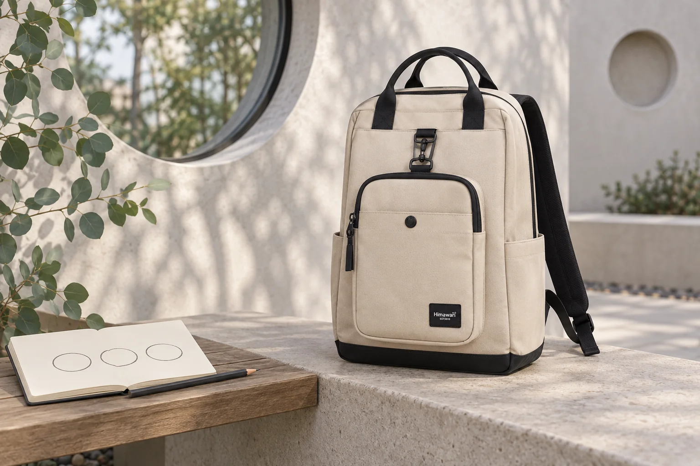

동네 산책의 작은 주제: 같은 모양을 세 번 찾아보기

늘 걷는 길에서는 가게 이름이나 목적지부터 보게 됩니다. 오늘은 경로를 더 늘리지 않고 눈여겨볼 모양 하나만 골라보세요. 둥근 창, 벽의 작은 무늬, 화분의 가장자리처럼 비슷한 형태를 서로 다른 곳에서 찾는 산책입니다. 세 번을 꼭 채우는 과제보다 익숙한 풍경을 다른 기준으로 보는 작은 놀이에 가깝습니다.
오늘의 모양은 출발 전에 하나만
원이나 삼각형처럼 스스로 쉽게 알아볼 수 있는 모양을 고릅니다. 색과 재료, 글자까지 한꺼번에 찾기보다 한 가지 기준으로 시작해보세요. 완벽한 도형만 골라야 하는 것은 아닙니다. 둥글게 느껴지는 모서리나 여러 조각이 모여 만드는 모양도 자기 기준에 따라 볼 수 있습니다. 특별한 관찰 도구나 긴 목록을 더 챙기기보다 평소 걷는 구간에서 무엇을 찾고 싶은지 한 줄로 정해두면 됩니다.
같은 형태가 다른 역할로 쓰이는 자리
모양을 찾았다면 어디에 쓰였는지 잠깐 살펴봅니다. 둥근 창과 둥근 화분은 형태가 비슷해도 놓인 방향과 주변 풍경이 다릅니다. 크고 작다는 차이 외에 벽에 붙어 있는지, 바닥 위에 놓여 있는지처럼 눈으로 확인한 차이를 비교해보세요. 제작자의 의도나 건물의 역사까지 모양만 보고 추측할 필요는 없습니다. 그날 직접 볼 수 있는 장면 안에서 같은 점과 다른 점을 고르는 것이 이 산책의 주제입니다.
기록은 길을 비켜 멈춘 뒤에
작은 노트에 간단한 선을 남기거나 짧은 말로 적을 수 있습니다. 세밀한 그림을 완성해야 하는 것은 아니며 기록 없이 눈으로 비교하는 산책도 가능합니다. 적거나 사진을 찍고 싶다면 이동하는 사람을 방해하지 않는 자리에서 멈춥니다. 사유 공간에 들어가거나 다른 사람의 얼굴과 집 안을 함께 담지 않아도 주변에서 볼 수 있는 모양은 많습니다. 현장의 출입·촬영 안내를 따르고, 기록할 곳이 마땅하지 않으면 다음 자리로 지나가면 됩니다.
돌아온 뒤에는 가장 달랐던 둘을 골라보기
세 장면을 찾았다면 그중 모양은 비슷하지만 쓰이는 자리가 가장 달랐던 둘을 골라보세요. 많이 기록한 날보다 한 가지 차이를 기억하는 날도 있습니다. 다음 산책에서는 같은 모양을 더 찾거나 다른 기준으로 바꿀 수 있습니다. 사진의 No.0403은 베이지 백팩과 앞면 작은 가방, 검정 테두리와 손잡이를 실제 원본에 맞춰 표현했습니다. 백팩과 숄더백의 카탈로그 치수는 별도 항목이며, 곁에 놓인 노트가 안쪽에 들어간다는 뜻으로 사용하지 않았습니다.
참고·안내
- Himawari No.0403 제품 정보
- 실제 Himawari No.0403 베이지 원본과 제조사 카탈로그 백팩 외부 치수 28 × 40 × 17 cm를 참고한 AI 연출 사진입니다. 둥근 창과 노트는 가상의 관찰 소품이며 실제 장소·방문 후기나 노트 수납의 실측 예시가 아닙니다.
자주 묻는 질문
세 장면을 반드시 찾아야 하나요?
세 번은 가볍게 시작할 수 있는 예시입니다. 하나만 눈여겨보거나 기록 없이 비교해도 됩니다. 수를 채우려고 경로를 억지로 바꾸지 않아도 됩니다.
그림을 잘 그려야 할 수 있나요?
짧은 말이나 단순한 선으로도 기억할 수 있고 기록을 생략해도 됩니다. 같은 모양이 서로 다른 곳에 쓰이는 모습을 보는 산책입니다.